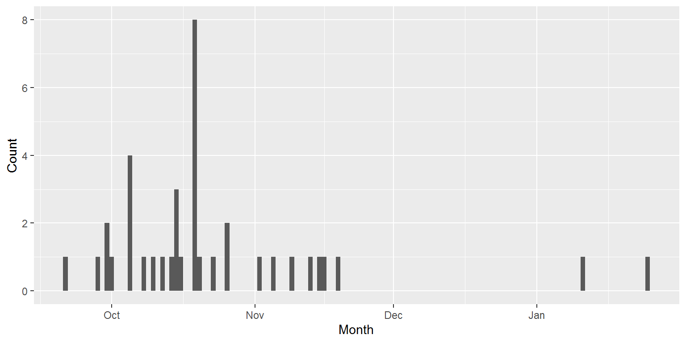
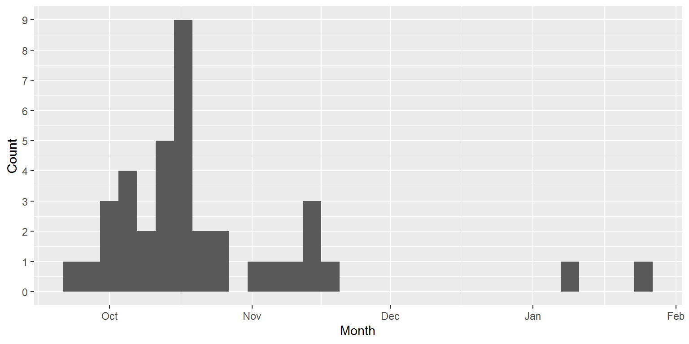

On 14th Sept 2020 I asked Twitter, “When do you think Lockdown II is happening in the UK?”
Here are the results.
library(tidyverse)
library(kableExtra)And a helper:
pretty_date <- function(d) format(d, format="%d %B %Y")Load in the data:
dat <- read.csv("guess_lockdown_2.csv")It’s just a single column: a list of all the guesses:
head(dat)## Date
## 1 21 September 2020
## 2 28 September 2020
## 3 30 September 2020
## 4 30 September 2020
## 5 01 October 2020
## 6 05 October 2020Let’s parse that as a date:
dat$guess_date <- parse_date(dat$Date, format = "%d %B %Y")
head(dat)## Date guess_date
## 1 21 September 2020 2020-09-21
## 2 28 September 2020 2020-09-28
## 3 30 September 2020 2020-09-30
## 4 30 September 2020 2020-09-30
## 5 01 October 2020 2020-10-01
## 6 05 October 2020 2020-10-05The mean guess was 23 October 2020.
The median was 19 October 2020.
Here’s the frequency of the dates:
guess_table <- dat %>%
group_by(guess_date) %>%
summarise(n = n())## `summarise()` ungrouping output (override with `.groups` argument)Now a histogram of guesses, first with a binwidth of 1.
ggplot(dat, aes(x = guess_date)) +
geom_histogram(binwidth=1) +
xlab("Month") +
ylab("Count")
ggplot(dat, aes(x = guess_date)) +
geom_histogram(binwidth=4) +
xlab("Month") +
ylab("Count") +
scale_y_continuous(breaks=seq(0,10,1))
mode_n <- max(guess_table$n)
mode_guesses <- guess_table %>%
filter(n == mode_n)The most common guess was 19 October 2020.
The top 5 guesses were:
guess_table %>%
arrange(desc(n)) %>%
top_n(5) %>%
kbl() %>%
kable_paper("hover", full_width = F)## Selecting by n| guess_date | n |
|---|---|
| 2020-10-19 | 8 |
| 2020-10-05 | 4 |
| 2020-10-15 | 3 |
| 2020-09-30 | 2 |
| 2020-10-26 | 2 |
Finally, here’s a summary…
summary(dat$guess_date)## Min. 1st Qu. Median Mean 3rd Qu. Max.
## "2020-09-21" "2020-10-08" "2020-10-19" "2020-10-23" "2020-10-26" "2021-01-25"